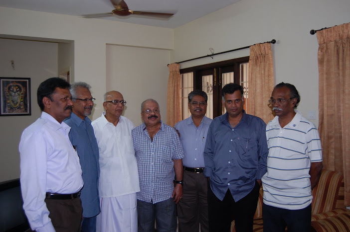
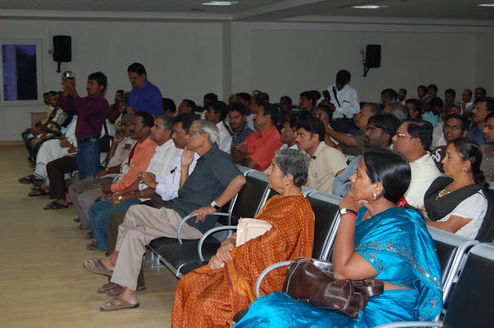
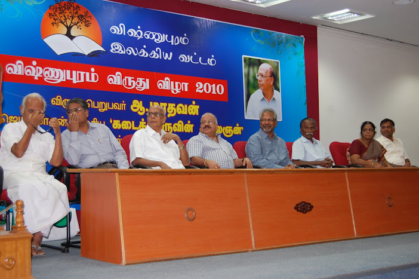
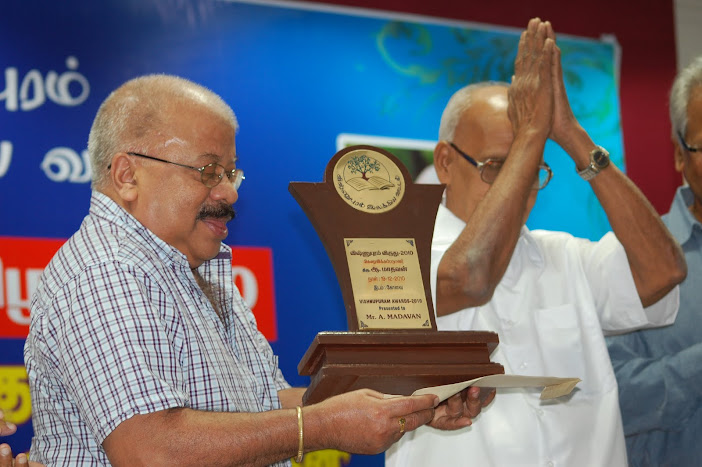
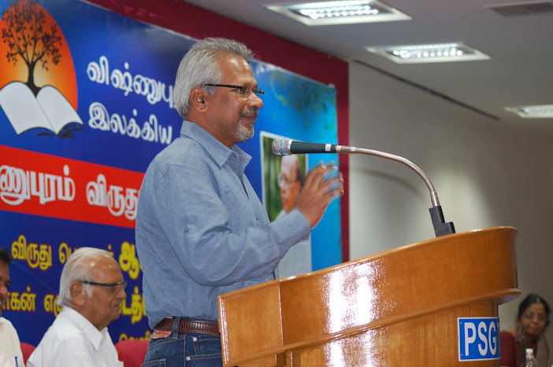
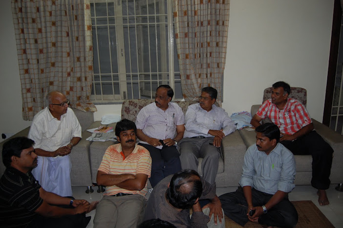

Living Tamil Association for World Literature (LTAWL)
The very first Vishnupuram Literary Circle Award was presented to the Tamil writer A. Madhavan at a gathering in Coimbatore — translated and adapted from the original Tamil accounts.
A. Madhavan had spent decades writing about the market street of Thiruvananthapuram — the desire, anger and self-deception of the ordinary people who passed through it — in a plain, unsentimental style that Tamil readers and critics had quietly admired across several literary generations, from the era of N. Pichamurthy down to younger critics like E. Vedasakayakumar. Yet none of that admiration had translated into institutional honour, partly because of his own withdrawn, private nature. The Vishnupuram Literary Circle Award was conceived precisely to correct omissions of this kind, and in its very first year, in 2010, it went to Madhavan.

Jeyamohan and a small group of friends set out from home on the evening of 17 December 2010, taking the train to Coimbatore. Others converged the next day, among them the film director Mani Ratnam. The friends spent the time before the formal event much as old literary companions do — talking, laughing, breaking into song — and that same unhurried, informal mood carried into the ceremony itself.


The event was held in the auditorium of PSG College in Coimbatore, before an audience of roughly 350 — mostly young readers, bloggers and aspiring writers drawn from Tamil literary circles that had grown up around the internet rather than the older establishment. Ramachandra Sharma opened the proceedings with a song, "Manathil Urudi Vendum," and M. A. Susheela followed with the welcome address. Gnaani spoke next, turning a critical eye on the politics of literary prizes in general and on the academy's habit of dismissing living, contemporary writing.

Jeyamohan — known to friends as Ikka — then presented the award itself and read out the citation, describing Madhavan's fictional world as close in spirit to that of the Malayalam writer Vaikom Muhammad Basheer, and calling it "a soft light falling on people wandering in darkness." Mani Ratnam spoke about the narrowing distance between literature and cinema, remarking that Madhavan's stories of Thiruvananthapuram's lanes had sharpened his own eye for those streets. Nanjil Nadan gave what many in the hall considered the high point of the afternoon: thirty years of friendship with Madhavan, and thirty years of watching him go unrecognized, distilled into the observation that public recognition is not what makes a writer — but that writers are nonetheless owed it. Vedhasakayakumar then examined Madhavan's preoccupation with the darker corners of human conscience, placing his story sometimes rendered as "Oru Naal" alongside the work of Sundara Ramasamy and G. Nagarajan. Jeyamohan returned once more before the ceremony closed, speaking briefly on the writing of literary biography.
Madhavan, whose health limited how long he could stand and speak, kept his own remarks short, but said he was moved simply to see so many young people arguing so earnestly about literature — and he stayed on afterward, signing books for readers. The formal programme, and the conversation that followed it, ran on until about half past five that evening.


To mark the award, a companion volume — Kadaitheru Kalaignan ("The Artist of the Market Street") — was prepared, gathering essays that introduced and examined Madhavan's fiction for readers meeting him for the first time. A copy was formally released at the ceremony and handed to a young reader, Radhakrishnan, as its first recipient. The book made explicit the case the award itself was making: that a writer long and quietly respected by his peers had waited far too long for anyone to say so publicly.

Translated and condensed from the original Tamil accounts: jeyamohan.in/10869 and jeyamohan.in/9395